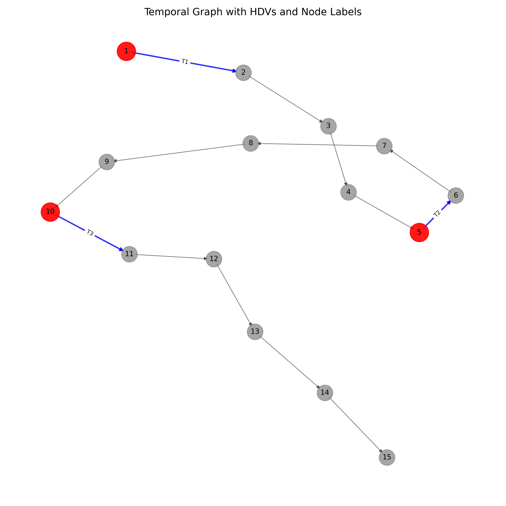

Results & Logs
HDV path query time: 0.482 seconds
HDV path query first 3 results:
Score: 0.35 Path: [1, 2, 3, 4, 5, 6, 10]
Score: 0.30 Path: [1, 2, 5, 6, 7, 10]
Score: 0.28 Path: [1, 5, 6, 7, 8, 9, 10]
Total running time: 2.743 seconds